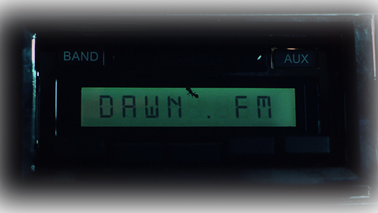
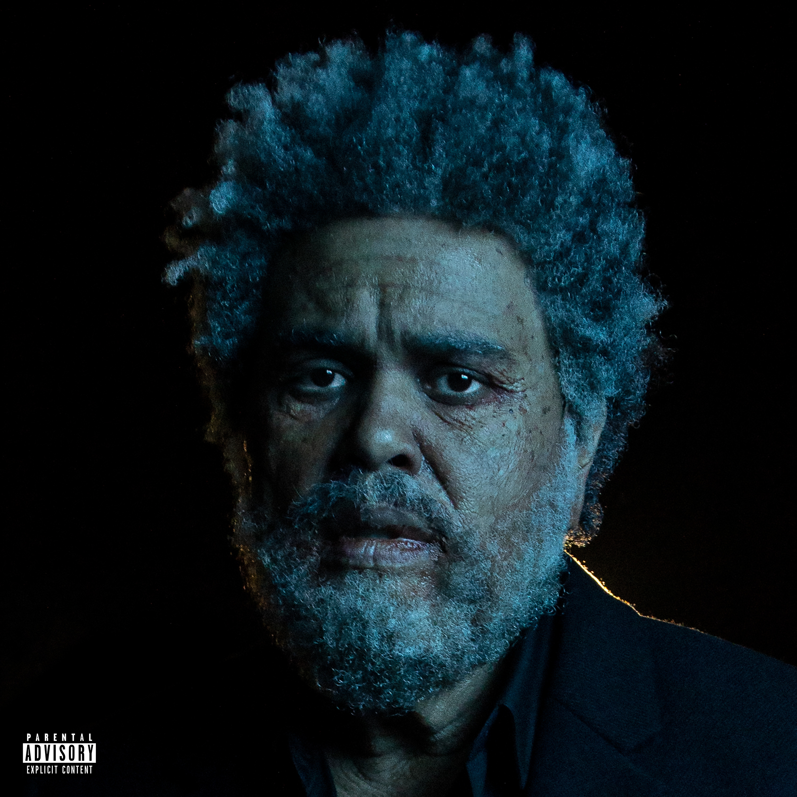

103.5 Dawn FM
album experience by...the Weeknd


the Weeknd
Dawn FM은 The Weeknd의 정규 5집 앨범이다.
앨범의 제목에서도 알수 있듯 라디오 가상 채널 '103.5 Dawn FM'이 소재이다.
The Weeknd는 앨범에 관해 "앨범을 이런 식으로 상상해 보세요. 청자가 죽은 거예요. 일종의 연옥에 갇혀 있는데,
저는 항상 터널 끝에 있는 빛에 닿기 위해서 교통 체증 속에 갇혀 있는 모습일 것 같다는 생각을 해요. 그렇게 꽉 막힌
도로에 갇혀 있는데 차에서는 라디오가 흘러나오고, 라디오 진행자는 그 빛을 향해 청자를 이끌어주고 다음 단계로 나아갈 수 있도록 도와주는 거죠.
그러니까 기쁜 느낌이 들 수도 있고, 암울한 느낌이 들 수도 있고, 어떤 느낌이 들게 하고 싶은지에 따라 달라질 수 있는 거죠. 그게 바로 제가 생각하는 ‘Dawn FM’입니다."
라고 말했다.